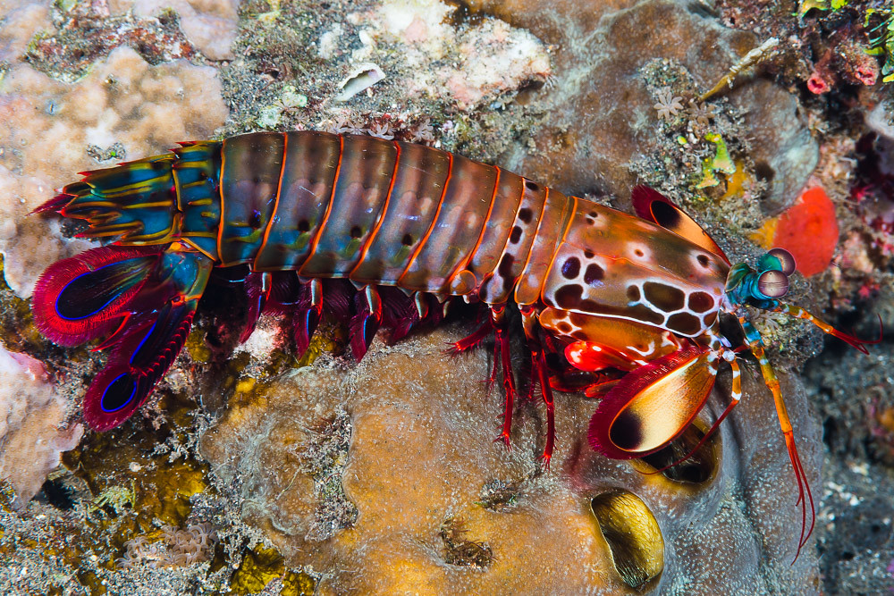
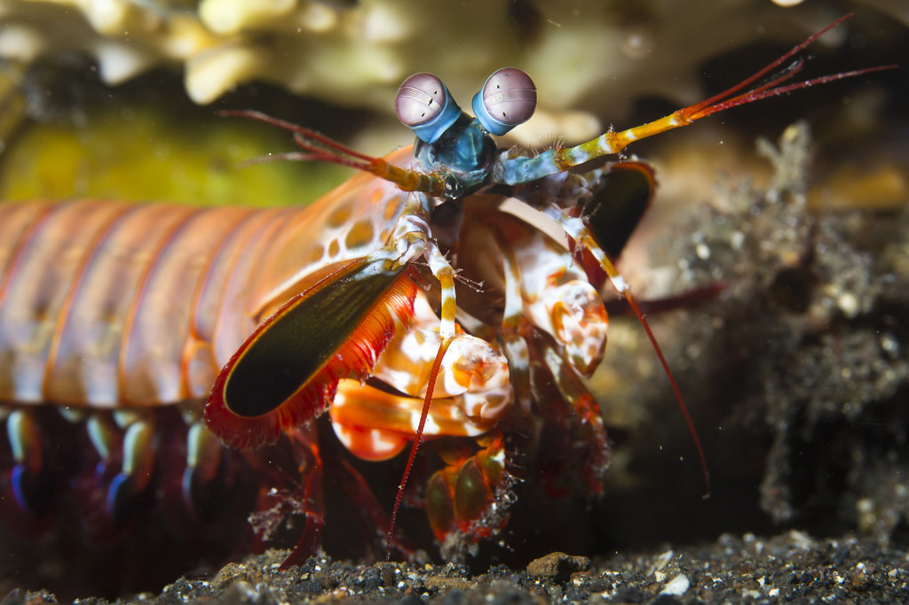

Mantis Shrimp are the coolest thing in the animal kingdom


Fun Facts
They are also one of the fastest swimmers in the sea, swimming at speeds of up to 30 body lengths per second
They pack a punch
The mantis shrimp can punch with the speed of a .22 caliber bullet—strong enough to break the shells of its prey, as well as aquarium glass.
When a mantis shrimp hits its target, the velocity causes water to vaporize, then implode with a sharp bang, extremely high heat, and a flash of light—all of which is felt by the prey animal as an additional blow.
When the striking limb of a mantis shrimp is not in use, it lies folded under the animal’s body, compressing a saddle-shaped spring that drives the animals stupendous strikes.
Mantis shrimp have the most complex visual system ever reported in the animal kingdom.
Mantis Shrimp tend to live between 3-40 meters
Check out this interactive visualization of ocean depth to see which parts of the ocean the Mantis Shrimp could potentially live